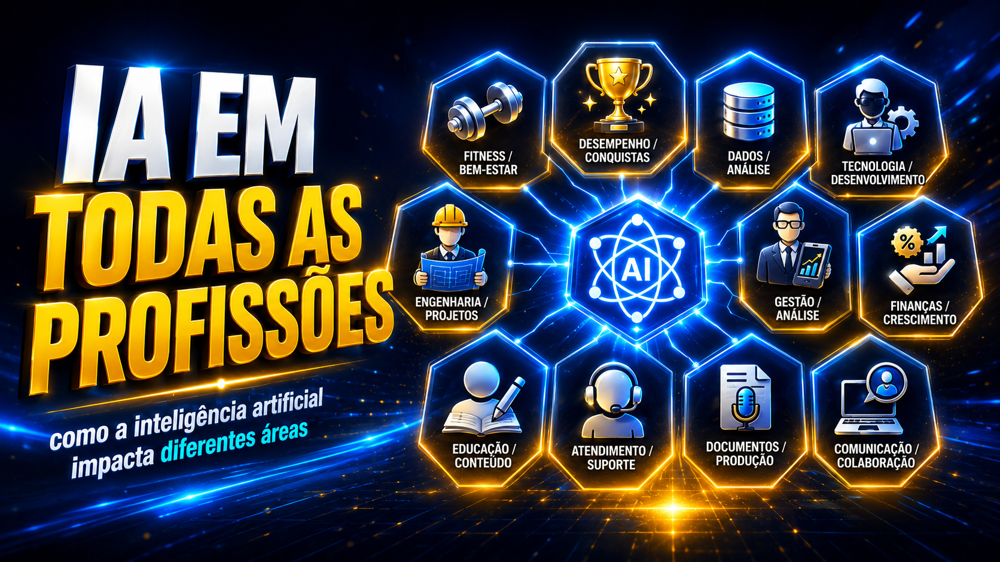

Curso gratuito · INEMA.CLUBIntegra sua Profissão com IA
A IA não vai embora. Em vez de trocar de carreira, encontre a versão IA-nativa da profissão que você já tem. Em 3 trilhas e 6 habilidades, você sai de espectador a a pessoa de IA do seu time — e blinda sua carreira.
Por que agora — os números não mentem
Quando o Excel chegou, quem insistiu no papel ficou para trás; quem adotou virou referência. A IA é como o Excel — só que muito maior, atingindo todas as funções ao mesmo tempo.
das organizações já usavam IA em 2024 (eram 55% em 2023).
Stanford AI Index, 2025
de empregos líquidos até 2030 (170 mi criados, 92 mi eliminados).
WEF Future of Jobs, 2025
das habilidades-chave vão mudar até 2030.
WEF Future of Jobs, 2025
de produtividade para iniciantes no suporte com IA (e até 55% mais rápido no código).
NBER, 2023 · GitHub Copilot
As 6 habilidades
A espinha do curso. Seis habilidades que se aplicam a qualquer cargo — distribuídas pelas 3 trilhas. Clique para ir direto à habilidade.
1 · Seja a Pessoa de IA
Vire a referência do seu círculo — sem trocar de carreira.
2 · Gosto & Critério
Decidir o que merece o seu nome — não confiar no 1º output.
3 · Engenharia de Contexto
Prompt é como você pede; contexto é o que a IA sabe.
4 · Velocidade de Iteração
Quem itera mais rápido, sem perder qualidade, vence.
5 · Construa seu Jarvis
Agente × workflow: sistemas que rodam sozinhos a seu favor.
6 · Blindagem & Múltiplas Rendas
Sua apólice: várias fontes de renda de uma só paixão.
As 3 trilhas
Do terreno à prática ao domínio avançado. 12 módulos, 72 tópicos, ~7h30.
Trilha 1 · Fundamentos
Dados de mercado, a evolução da IA e das profissões, e a habilidade de virar a pessoa de IA.
4 módulos · 24 tópicos · ~2h30
Trilha 2 · Carreiras
Diagnóstico, aceleração de produção, gosto & critério e blindagem com múltiplas rendas.
4 módulos · 24 tópicos · ~2h30
Trilha 3 · Avançado
A pirâmide prompt → vibe code → contexto → agentic → arquitetura, a intenção e o seu Jarvis.
4 módulos · 24 tópicos · ~2h40
Continue a jornada: de espectador a especialista
Depois dos fundamentos, estes cursos do INEMA.CLUB levam você adiante, em 3 estágios — do despertar à liderança.
Despertar
Integrar a IA na profissão que você já tem.
Implementar
Virar quem produz e implementa com IA.
Liderar & Monetizar
Consultor, CAIO e certificação.
O caminho de carreira
Três passos para sair de "uso a IA às vezes" para "minha carreira está integrada com IA". O curso te leva por eles.
Mapeie suas tarefas, separe julgamento de repetível e escolha 1 alvo com métrica clara. Módulo 2.1 →
0-30: 1 ferramenta + 1 workflow. 31-60: medir e mostrar. 61-90: escalar e abrir 1 ramo. Módulo 2.4 →
Múltiplas rendas de uma paixão + seu Jarvis trabalhando em segundo plano. Módulo 3.4 →
Compartilhe e baixe
O curso é self-contained: funciona offline, abrindo os arquivos no navegador. Sua jornada (progresso, dúvidas, anotações) fica salva no seu navegador e pode ser exportada em Minha jornada → Exportar. Baixe o guia de ação e leve o caminho com você.
As 6 habilidades num quadro
O resumo visual do curso. Toque para ampliar — salve, imprima ou compartilhe.